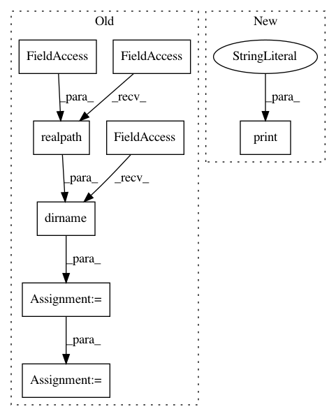

2728afcd57721b34f95ba575507a3db6c86c1f4c,tests/test_model_remote.py,,,#,151
Before Change
if __name__ == "__main__":
try:
file_path = os.path.dirname(os.path.realpath(__file__))
cpp_model = subprocess.Popen([os.path.join(file_path, "cpproblight/test_gum_marsaglia"), "tcp://*:5555"], preexec_fn=os.setsid)
cpp_model_with_replacement = subprocess.Popen([os.path.join(file_path, "cpproblight/test_gum_marsaglia_replacement"), "tcp://*:5556"], preexec_fn=os.setsid)
unittest.main(verbosity=2)
except KeyboardInterrupt:
print("Stopped")
except Exception:
After Change
docker_client = docker.from_env()
print("Pulling latest Docker image: probprog/cpproblight")
docker_client.images.pull("probprog/cpproblight")
print("Docker image pulled.")
docker_client.containers.run("probprog/cpproblight", "/code/cpproblight/build/cpproblight/test_gum_marsaglia tcp://*:5555", network="host", detach=True)
GaussianWithUnknownMeanMarsagliaCPP = ModelRemote("tcp://127.0.0.1:5555")
In pattern: SUPERPATTERN
Frequency: 3
Non-data size: 8
Instances
Project Name: pyprob/pyprob
Commit Name: 2728afcd57721b34f95ba575507a3db6c86c1f4c
Time: 2018-02-21
Author: atilimgunes.baydin@gmail.com
File Name: tests/test_model_remote.py
Class Name:
Method Name:
Project Name: senarvi/theanolm
Commit Name: 80d6b65bb6df4ca500769f195d13de8fa125c611
Time: 2016-04-15
Author: seppo.git@marjaniemi.com
File Name: theanolm/commands/sample.py
Class Name:
Method Name: sample
Project Name: rusty1s/pytorch_geometric
Commit Name: db28ee240981457335c6fd9c38e542066df214cb
Time: 2020-02-19
Author: matthias.fey@tu-dortmund.de
File Name: examples/cluster_gcn.py
Class Name:
Method Name: